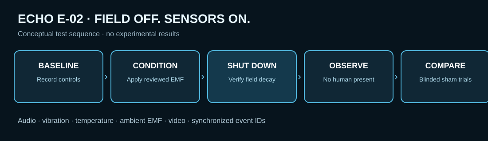

Passive baseline
Record in an unoccupied, controlled test space without an observer present during acquisition. Preserve continuous environmental, acoustic and vibration baselines and synchronized timestamps.
Can an environment produce reproducible signals resembling past events? ECHO proposes a way to investigate the unproven “Stone Tape” or environmental-memory idea without presuming that materials actually record or replay historical events.
The Stone Tape idea suggests that materials such as stone might somehow retain information about past events and later release it. No scientifically established mechanism or reproducible evidence currently demonstrates that historical experiences are recorded or replayed in this way. The proposed ECHO program is designed to test measurable predictions rather than assume the hypothesis is true.
Record in an unoccupied, controlled test space without an observer present during acquisition. Preserve continuous environmental, acoustic and vibration baselines and synchronized timestamps.
Use safe and repeatable changes in sound, vibration, lighting, temperature or humidity, along with matched sham trials. Record the intervention schedule separately from blinded reviewers.
Compare stone, brick, plaster and wood specimens. Randomize coded specimens to controlled exposure and sham conditions, using matched controls and an empty-chamber reference. Define primary outcome measures before data collection, including event rates above a pre-established noise baseline and reproducibility across independent sessions.
Calibrated microphones, contact vibration sensors, thermal measurements, humidity, pressure, ambient EMF, and visible or low-light cameras. FLIR would provide an independent reference where appropriate.
Exclude radio pickup, acoustic transmission, recorder and electronic artifacts, HVAC, vibration coupling, handling noise, drift, observer contamination and analysis selection effects.
Use preregistered review criteria, decoy/control recordings and independent reviewers. Do not give listeners suggested phrases before their first assessment.
Synchronize instruments and event IDs through the proposed Panic Box architecture, with optional correlation against MTC and Temperature Curtain streams.
Calibrate instruments, validate known-signal detection, establish background and false-positive rates, then test randomized exposed versus sham samples.
Collect passive unoccupied baselines, then conduct carefully reviewed and randomized low-energy trigger and sham trials with preserved environmental records.
Publish protocols, raw-data policies and failure criteria for independent groups to repeat; examine whether any unexpected effects survive conventional-cause checks.
Could a controlled electromagnetic exposure alter the rate or character of measurable events after the applied field is completely turned off? This test does not assume an environment stores or replays historical events.

Collect synchronized audio, vibration, thermal, ambient EMF and video data in an unoccupied space. Record environmental cycles and equipment background.
Apply a bounded, safety-reviewed EM field for a predetermined interval; document field strength, frequency, waveform, orientation and duration. A proposed Perfect Storm module may eventually supply controlled fields.
Switch off the field source and independently measure residual fields, transients, magnetization and instrument settling. Mark the verified field-off timestamp; do not count unsettled intervals as delayed effects.
Leave the space unoccupied and continue synchronized monitoring for a preregistered observation window, initially proposed as two hours. No investigator listens or interprets sounds during acquisition.
Randomize real-conditioning versus sham sessions, keep reviewers blind, compare event rates and signal features with baseline and controls, and independently attempt replication.
Matched sessions with equipment operating procedurally but no applied conditioning field; primary test of whether post-off event rates differ.
Compare predetermined shorter and longer exposure windows while holding other variables constant.
Compare independently verified steady, pulsed or rotating fields only after electromagnetic compatibility and safety review.
Test whether seven consecutive sessions differ from randomized non-conditioning nights; control for time of day, occupancy and environmental drift.
Scientists, engineers, skeptics and investigators are invited to identify sources of contamination, suggest sharper controls or propose a credible falsification test.
Join the public research discussion ↗A free GitHub account is required to comment.